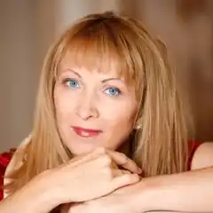
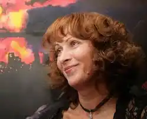
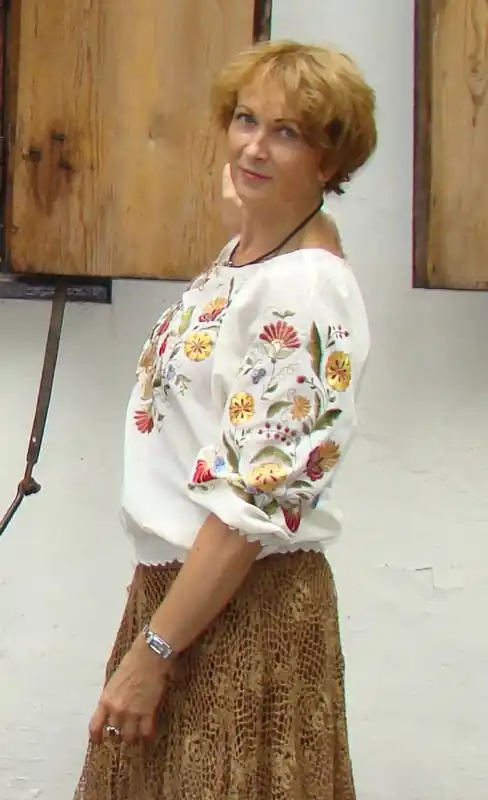

3 листопада 1962 року в Донецьку народилася Роздобудько Ірен Віталіївна – українська журналістка, письменниця, поетеса, сценаристка.
Її називають однією з найуспішніших українських письменниць, вона – неодноразова переможниця літературного конкурсу "Коронація слова". Варто зазначити, що завдяки цьому конкурсу до сучасного українського літературного процесу влилися твори низки таких авторів як Марія Матіос, Лариса Денисенко, Андрій Кокотюха. І це лише найвідоміші з коронаційних "відкриттів".
Письменниця у своїй творчості ніколи не обмежувалася якимись одним жанром, вона також сміливо експерементує із стилями, темами та героями і вибудовує власну оригінальну манеру. Ірен Роздобудько просто займається улюбленою справою, і можливо, саме у цьому нестримному бажанні і закладена формула її успіху. А ще – у таланті і великій працелюбності. У творчому доробку Ірен кілька десятків дуже різних книжок, серед яких легкі детективи, любовні, психологічні, сатиричні романи та навіть дитячі книжки, зокрема "Коли оживають ляльки", "Пригоди на острові Клаварен", "Дитинство видатних людей", куди увійшли п'ять біографій маленьких геніїв різних країн – Блеза Паскаля, Вольфганга Моцарта, Катерини Білокур, Чарлі Чапліна та Ганса Андерсена. "Мерці" – перший досвід Ірен Роздобудько у жанрі психологічного трилера й перша перемога (друге призове місце в "Коронації слова – 2000"). Далі були: детектив "Пастка для жар-птиці" – отримав премію Всеукраїнського конкурсу "Коронація слова – 2001" та одна з найвідоміших серед читачів книжок, психологічна драма "Гудзик", що отримала премію Всеукраїнського конкурсу "Коронація слова – 2005". За книжкою режисер Володимир Тихий зняв однойменний фільм. А ще у списку нагорд є спеціальна відзнака "Коронації слова – 2011" у номінації "Кіносценарії" за "Садок Вишневий…" – Ірен Роздобудько, Олесь Санін. Ірен Роздобудько – володарка титулу "Золотий письменник України". Таку назву носить почесна літературна відзнака, якою нагороджують найпопулярніших письменників України. Батьки назвали доньку Ірен на честь героїні роману Джона Голсуорсі "Сага про Форссайтів" Ірен Форсайт. У шість років дівчинка написала своє перше оповідання – "Казку про Чайник і Матрьошки". Однак ще до того, як навчилася писати, вона вигадувала різні історії і небилиці і розповідала їх друзям у дитячому садку, особливо під час тихої години. У шкільні роки Ірен відвідувала різні театральні гуртки і мріяла про сцену. Однак у старших класах зрозуміла, що великої актриси з неї не вийде, а тому вступила на заочне відділення факультету журналістики Київського національного університету і з 16 років почала працювати, при цьому сміливо бралася за будь-яку роботу, а тому й має за плечима безцінний та величезний досвід у різних сферах діяльності. У 1988 році Ірен Роздобудько переїхала до Києва, де мешкає і сьогодні. Працює головним редактором журналу "Караван історій. Україна". Про своє особисте життя письменниця не любить розповідати. Відомо, що у неї є доросла донька Яна, яка за фахом скульптор-монументаліст. У 2009 році Ірен вийшла заміж за відомого поета та барда Ігоря Жука. У зіркового подружжя не тільки хороші стосунки у родині, вони ще й спільно займаються творчістю, зокрема виступають дуетом з піснями та співаною поезією.